A natural generalisation of the null hypothesis of a Gaussian linear stochastic process is that of a multivariate process of the same kind. In this case, the process is determined by giving the cross-spectrum in addition to the power spectrum of each of the channels. In Ref. [34], it has been pointed out that phase randomised surrogates are readily produced by multiplying the Fourier phases of each of the channels by the same set of random phases since the cross-spectrum reflects relative phases only. The authors of Ref. [34] did not discuss the possibility to combine multivariate phase randomisation with an amplitude adjustment step. The extension of the iterative refinement scheme introduced in Sec. 4.3 to the multivariate case is relatively straightforward. Since deviations from a Gaussian distribution are very common and may occur due to a simple invertible rescaling due to the measurement process, we want to give the algorithm here.
Recall that the iterative scheme consists of two procedures which are applied
in an alternating fashion until convergence to a fixed point is achieved. The
amplitude adjustment procedure by rank ordering (13) is readily
applied to each channel individually. However, the spectral adjustment in the
Fourier domain has to be modified. Let us introduce a second index in order to
denote the M different channels of a multivariate time series 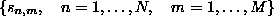. The change that has to be applied
to the ``filter'' step, Eq.(12), is that the phases
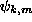 have to be replaced by phases 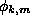 with the
following properties. (We have dropped the superscript (i) for convenience.)
The replacement should be minimal in the least
squares sense, that is, it should minimise
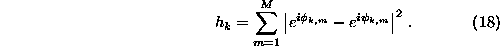
Also, the new phases must implement the same phase differences exhibited by the
corresponding phases 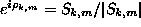 of the data:
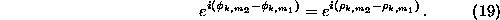
The last equation can be fulfilled by setting 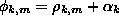. With this, we have 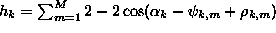 which is extremal when
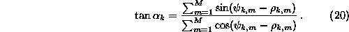
The minimum is selected by taking 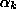 in the correct quadrant.
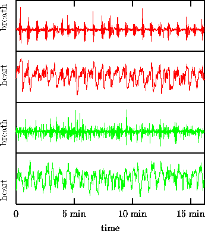
Figure: Simultaneous surrogates for a bi-variate time series. The upper two panels show simultaneous recordings of the breath rate and the instantaneous heart rate of a human. The lower two panels show surrogate sequences that preserve the individual distributions and power spectra as well as the cross-correlation function between heart and breath rate. The most prominent difference between data and surrogates is the lack of coherence in the surrogate breath rate.
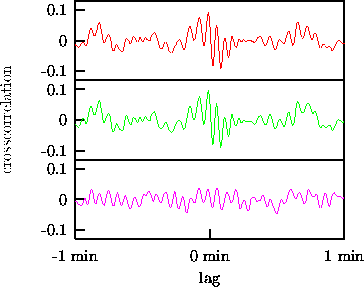
Figure: Cross-correlation functions for the bi-variate data shown in Fig. 8 (upper panel), and a surrogate that preserves the individual spectra and distributions as well as the relative Fourier phases (middle). The lower panel shows the same for surrogates prepared for each channel individually, that is, without explicitly preserving the cross-correlation structure.
As an example, let us generate a surrogate sequence for a simultaneous recording of the breath rate and the instantaneous heart rate of a human during sleep. The data is again taken from data set B of the Santa Fe Institute time series contest [31]. The 1944 data points are an end-point matched sub-sequence of the data used as a multivariate example in Ref. [26]. In the latter study, which will be commented on in Sec. 6.2 below, the breath rate signal had been considered to be an input and therefore not been randomised. Here, we will randomise both channels under the condition that their individual spectra as well as their cross-correlation function are preserved as well as possible while matching the individual distributions exactly. The iterative scheme introduced above took 188 iterations to converge to a fixed point. The data and a bi-variate surrogate is shown in Fig. 8. In Fig. 9, the cross-correlation functions of the data and one surrogate are plotted. Also, for comparison, the same for two individual surrogates of the two channels. The most striking difference between data and surrogates is that the coherence of the breath rate is lost. Thus, it is indeed reasonable to exclude the nonlinear structure in the breath dynamics from a further analysis of the heart rate by taking the breath rate as a given input signal. Such an analysis is however beyond the scope of the method discussed in this section. First of all, specifying the full cross-correlation function to a fixed signal plus the autocorrelation function over-specifies the problem and there is no room for randomisation. In Sec. 6.2 below, we will therefore revisit this problem. With the general constrained randomisation scheme to be introduced below, it will be possible to specify a limited number of lags of the auto- and cross-correlation functions.